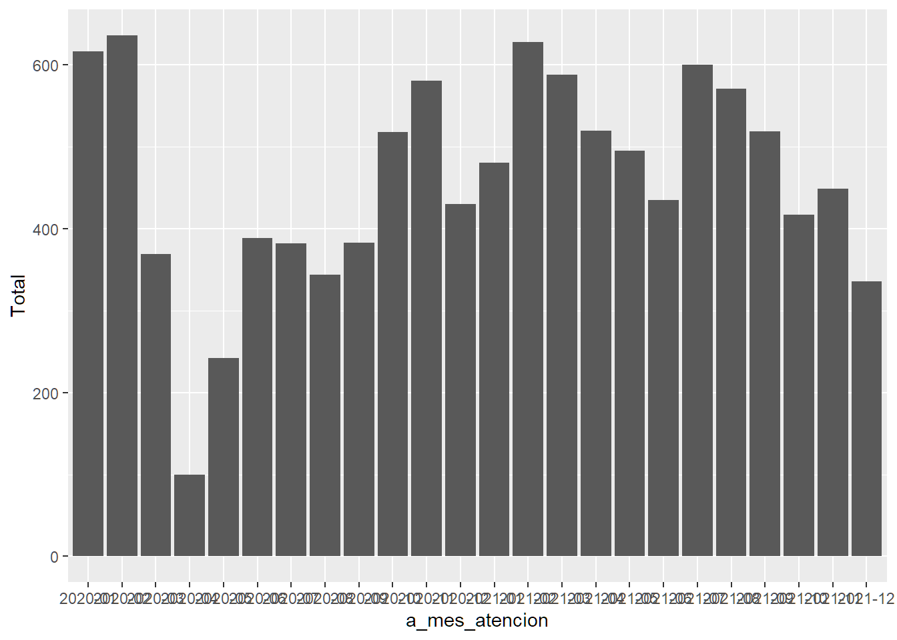
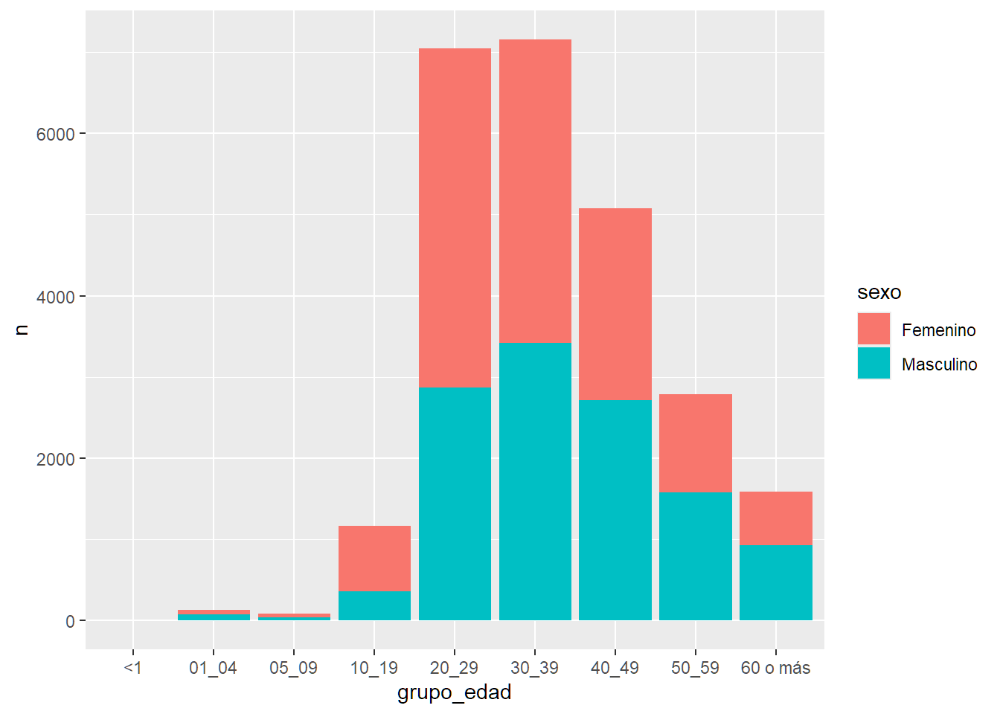
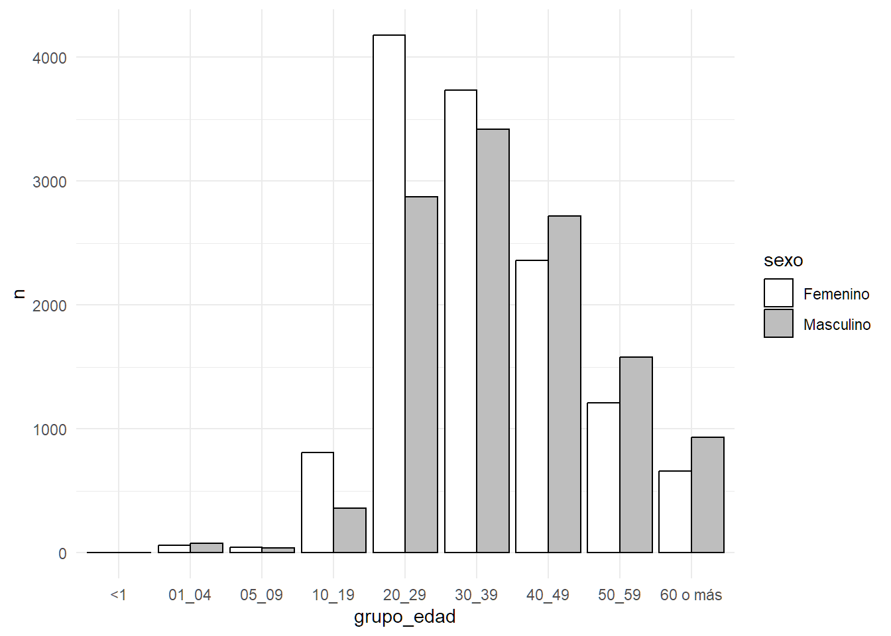

install.packages("pacman") #para instalar el paquete pacman (solo una vez)7 Análisis de datos usando R
7.1 Tareas que se deben de hacer para llevar a cabo un proyecto de análisis de datos
Es posible que ya tengas conocimiento sobre la estructura del documento que debes desarrollar para analizar tus datos, ya sea para toma de decisiones o para elaborar un trabajo final. En esta sección nos enfocaremos en la generación de resultados o salidas de R, donde tienes que realizar tablas, gráficos y análisis estadísticos. A continuación, te mostramos un listado de los elementos requeridos en la sección de resultados partiendo de un contexto clínico o epidemiológico:
Proporciona número de casos, incidencia o prevalencia de un evento.
Características clínicas, por ejemplo, síntomas comunes, porcentaje de hospitalizados o fallecidos, resultados de laboratorio como porcentaje de confirmados o distribución por especie o subtipo (generalmente presentados en una tabla).
Tiempo: casos por año, mes, semana u otro intervalo apropiado, para mostrar patrones o cambios a lo largo de un período determinado. Puede estratificarse por grupos de edad, sexo, región o características de persona; lugar (generalmente se presenta en un gráfico). Señale cambios importantes, tendencias estacionales, aberraciones (Ej., Brotes) u otros patrones inusuales.
Lugar: como el área geográfica donde ocurre el evento. Esto, generalmente, se presenta con un mapa o una tabla.
Persona, por ejemplo, por grupo de edad, sexo y otras características relevantes (generalmente presentadas en una tabla).
Existen otros resultados destacados que no se incluyen en las categorías enumeradas anteriormente. Por ejemplo, muchos informes resumidos de vigilancia epidemiológica incluyen datos sobre la integridad y puntualidad de los informes de cada fuente de informes.
Con una base de datos de ejemplo vamos a realizar los pasos en R para producir los requerimientos sugeridos anteriormente. Vamos a usar como fuente de datos para este ejercicio una base de datos de casos de VIH positivos notificados. (Esta base está disponible en el siguiente link).
Esta base de datos (o la que vayas a usar) debes de colocarla en la subcarpeta de “Bases de datos” dentro de la carpeta del proyecto (ejemplo la mi carpeta donde está el proyecto de Rstudio se llama trabajos de campo). A modo de refrescamiento, ver la siguiente imagen de la estructura de sub-carpetas de un proyecto, su jerarquía.
7.1.1 Organización general antes de comenzar
Como refrescamiento, antes de comenzar recuerda crear el proyecto (ver la sección de Comenzar a trabajar con R y la interfaz de Rstudio)
Procesamiento de datos (cargar, editar, transformar dataframes)
Crear un documento de rutina de R, (Ctrl+shift+N o en File, R script),
Comentar al menos el título del trabajo que estas haciendo (escribir # , que es el carácter para hacer comentarios, después de este puedes escribir cualquier cosa y no será interpretado como código).
Instalar el paquete pacman(luego nos permitirá con mayor facilidad instalar el resto)
Cargar los siguientes paquetes:
rio (para cargar archivos excel y otros formatos)
tidyverse (para transformar, revisar la base de datos)
janitor (para tablas y limpieza de datos)
flextable (para formato de presentación de las tablas)
lubridate (para trabajar con funciones con variables de formatos de fecha)
skimr (para revisar la base de datos)
here (para ayudarnos a encontrar los archivos que vamos a usar, también a guardarlos)
gtsummary (para hacer tablas presentables y cálculos que usamos con frecuencia en epidemiología)
Para cargar estos paquetes procedemos a usar la función p_load() del paquete {pacman}, en el panel de editor de rutinas, escribes el siguiente comando:
pacman::p_load(rio,
tidyverse,
janitor,
lubridate,
skimr,
here,
flextable,
gtsummary) #para instalar y cargar los paquetes necesariosLuego de copiar o de introducir el código, preciona Ctrl+ENTER al final de la línea de código o en “run” para ejecutarlo.
Otra alternativa para cargar los paquetes es con la función de R base library(). Al igual que con p_load() de pacman, escribes el nombre o los nombres de los paquetes separados por coma. Ojo, esta función solo carga los paquetes, si el paquete no está instalado, te dará error.
NOTA: Debes tener conexión a internet para poder descargar estos paquetes.
Después de instalar los paquetes no necesitarás instalarlos de nuevo, a menos que re-instales o actualices Rstudio.
Antes de continuar, guarda la rutina en la carpeta de tu proyecto “rutinas” utilizando cualquiera de estas opciones:
Presionando la combinación de teclas Ctrl+S
Haciendo clic en el icono de guardar
Desde el menú: File -> Save
El próximo paso es cargar la base de datos, y esto lo podemos hacer de dos formas: escribiendo directamente en la rutina o en la consola, tal como vimos cuando explicamos los dataframes en el capítulo 5 de objetos de R, o bien, usando la interfaz de Rstudio.
Recuerda tener tus bases de datos en la carpeta de “datos” dentro de tu carpeta del proyecto, esto es muy importante para facilitar el trabajo.
Vamos a ver cómo sería el código para cargar un archivo de Excel:
#para crear un objeto dataframe (nuestra base)
base <- import(here("datos", "sinave_vih.xlsx")) %>%
clean_names()Explicando un poco el código anterior: estamos creando un nuevo objeto llamado “base”,a través de la función de import del paquete rio, que sirve para cargar archivos tipo .xls, .xlsx., y con la finalidad de localizar la ruta del archivo de la forma más sencilla posible, usamos la función here() del paquete here escribiendo los parámetros de la sub-carpeta, es decir, agregando entre comillas el nombre de la carpeta donde está la base de datos (primer parámetro: “datos), y después de una coma se agrega el segundo parámetro que es el nombre del archivo, en este ejemplo, el archivo se denomina sinave_vih.xlsx. Luego sigue un operador pipe (%>%) que significa “luego” y a través de la función clean_names() del paquete janitor podremos “normalizar” los nombres de las columnas o variables de la base de datos importada. Esta normalización consiste, por ejemplo, en estandarizar los nombres de las variables poniéndolas todas en minúsculas, quitar caracteres poco comunes o espacios, entre otros ajustes que consideremos importantes.
Si estás utilizando la misma base de datos del ejemplo, y si hiciste los pasos correctamente, debes de tener una imagen similar a la de la Figura 23, donde puedes ver a la derecha que ya tienes un objeto dataframe cargado (es decir, la base de datos) que contiene 25,227 filas y 71 variables o columnas. (ver figura Figura fig-bdimportada)

Donde puedes ver a la derecha que ya tienes un objeto dataframe cargado (la base de datos) que tiene 25,227 filas y 71 variables o columnas.
7.1.1.1 Exploración de la base de datos
Entonces, la primera pregunta que te hacemos es; ¿Cuál es el próximo paso por seguir? Realmente debería ser el análisis, pero primero, sería bueno revisar la base de datos para ver los datos “malos” es decir, hacer una exploración para identificar valores anormales, campos vacíos o datos que se cargaron mal, como pasa a veces con las fechas.
El paquete de {rio} con la fórmula de import() hace un intento de determinar los tipos de variables que se cargan desde el archivo de Excel, pero a veces falla y es, usualmente, con las fechas, porque sin querer había una fecha escrita en un formato no reconocido y el resto como número.
Para explorar la base de datos, podemos hacerlo de forma directa haciendo clic en el panel de ambiente de trabajo en el objeto base (o el nombre que le hayas dado), o puedes escribir en la consola de comandos View(base) para cargar el visor de datos.
Otra forma más completa de explorar la base de datos es a través de la función skim() o skim_tee() del paquete {skimr} (Waring et al. 2022), puedes utilizar cualquiera de las dos porque ambas producen el mismo reporte. Con estas funciones obtendremos un resumen de cada variable, qué tipo de variable es cada una y muestra el total de campos vacíos, valores únicos, entre otros detalles importantes.
Con estos simples pasos, ya estamos entrando de lleno en el análisis. Recuerda, siempre el primer paso es verificar los datos, si hay valores extremos, datos faltantes, etc., esta es una buena práctica (diríamos que obligatoria) cuando estamos haciendo análisis, luego viene la limpieza de los datos.
Luego de escribir en tu rutina el último comando, debes tener escrito el siguiente código y obtener este resultado:
base <- import(here("datos", "sinave_vih.xlsx")) %>%
clean_names()
skimr::skim_tee(base) #para genera un mini reporte de la base── Data Summary ────────────────────────
Values
Name data
Number of rows 25615
Number of columns 41
_______________________
Column type frequency:
character 20
logical 1
numeric 17
POSIXct 3
________________________
Group variables None
── Variable type: character ────────────────────────────────────────────────────
skim_variable n_missing complete_rate min max empty n_unique
1 sexo 0 1 8 9 0 2
2 grupo_edad 0 1 2 8 0 9
3 actividad_ocupacional 24767 0.0331 5 120 0 167
4 grupo_ocupacional 24769 0.0330 21 76 0 10
5 categoria_de_afiliacion 0 1 10 23 0 5
6 nivel_educativo 6763 0.736 8 25 0 6
7 provincia 0 1 2 2 0 33
8 colectivo 8976 0.650 6 36 0 11
9 region 0 1 1 4 0 9
10 tipo_atencion 82 0.997 8 13 0 4
11 complicaciones 24005 0.0629 7 69 0 19
12 muestra 268 0.990 2 2 0 2
13 resultado_final 20575 0.197 9 10 0 3
14 condicion 0 1 4 6 0 2
15 gravedad 16183 0.368 5 20 0 3
16 edad_fecha_defuncion 25510 0.00410 5 8 0 74
17 diag_final 24394 0.0477 10 56 0 6
18 clasf_final 24394 0.0477 10 10 0 3
19 fuente_deteccion 0 1 14 24 0 5
20 confirmado_por 24396 0.0476 11 19 0 2
whitespace
1 0
2 0
3 0
4 0
5 0
6 0
7 0
8 0
9 0
10 0
11 0
12 0
13 0
14 0
15 0
16 0
17 0
18 0
19 0
20 0
── Variable type: logical ──────────────────────────────────────────────────────
skim_variable n_missing complete_rate mean count
1 fecha_inicio_erupcion 25615 0 NaN ": "
── Variable type: numeric ──────────────────────────────────────────────────────
skim_variable n_missing complete_rate mean sd p0
1 pxid 0 1 12808 7395. 1
2 fecha_nacimiento 0 1 30282. 4960. 8416
3 edad1 119 0.995 36.8 13.4 0
4 edad2 20494 0.200 0.0842 0.710 0
5 edad3 20537 0.198 0.101 1.40 0
6 pais_procedencia 0 1 1.18 0.398 1
7 semana_inicio_sintomas 0 1 25.6 15.3 1
8 mes_inicio_sintomas 0 1 6.32 3.50 1
9 ano_inicio_sintomas 0 1 2019. 1.41 2016
10 semana_atencion 0 1 25.7 15.2 1
11 mes_atencion 0 1 6.31 3.48 1
12 ano_atencion 0 1 2019. 1.40 2017
13 semana_toma_muestra 13577 0.470 25.5 14.9 1
14 fecha_toma_muestra 13577 0.470 43672. 531. 42737
15 institucion 0 1 4.53 0.757 1
16 semana_notificacion 0 1 26.1 15.0 1
17 fecha_notificacion 0 1 43738. 513. 42738
p25 p50 p75 p100 hist
1 6404. 12808 19212. 25615 ▇▇▇▇▇
2 27144. 30902 33921 44501 ▁▁▆▇▁
3 27 35 45 98 ▁▇▅▁▁
4 0 0 0 11 ▇▁▁▁▁
5 0 0 0 30 ▇▁▁▁▁
6 1 1 1 3 ▇▁▂▁▁
7 11 26 39 53 ▇▆▇▆▆
8 3 6 9 12 ▇▅▅▅▇
9 2018 2019 2020 2021 ▆▆▇▆▇
10 11 26 39 53 ▇▆▆▆▆
11 3 6 9 12 ▇▅▅▅▇
12 2018 2019 2020 2021 ▅▆▇▆▇
13 12 25 38 53 ▇▆▆▆▆
14 43214 43638 44174 44567 ▆▆▇▅▇
15 4 5 5 5 ▁▁▂▂▇
16 12 26 39 53 ▇▆▇▆▆
17 43315 43718 44232 44615 ▅▆▇▆▇
── Variable type: POSIXct ──────────────────────────────────────────────────────
skim_variable n_missing complete_rate min
1 fecha_inicio_sintomas 0 1 2016-12-03 00:00:00
2 fecha_atencion 0 1 2017-01-02 00:00:00
3 fecha_defuncion 25510 0.00410 2017-02-03 00:00:00
max median n_unique
1 2022-01-01 00:00:00 2019-08-15 00:00:00 1811
2 2022-01-01 00:00:00 2019-08-23 00:00:00 1653
3 2022-01-01 00:00:00 2020-10-06 00:00:00 100En el ejemplo anterior:
¿Cuántas variables de texto, numéricas, lógicas (si/no, 1/0), de fechas se cargaron?
¿Cuantas de las variables están en blanco o tienen muchos valores vacíos, cómo es la distribución de las variables numéricas y fechas, (valores extremos)?
¿Hay variables que se importaron incorrectamente? Variables que son de un formato y se importaron de otro tipo (fechas que se importan como texto o número por ejemplo)
Estas son las preguntas que debemos hacernos a partir de este resumen, para ir viendo la data y hacer la limpieza de datos, excluir columnas o variables, filtrar valores extremos o editarlos, cambiar o corregir el formato, etc.
En el ejemplo anterior vemos que vemos que el resultado arrojó 4 tablas con un tipo de variable cada una. La reproducimos aquí para visualizarla mejor:
Debajo de “Column type frequency” veremos en detalle cuatro tablas consecutivas, una conteniendo las variables de tipo “caracter”, la que sigue muestra las variables de tipo “lógico”, y así sucesivamente. Puedes notar el detalle dentro de cada tabla donde se indica el nombre de cada variable, el total de campos vacíos, la tasa de completitud, valores mínimos, máximos, promedios y valores únicos. Este resultado ofrece un resumen que nos facilita la exploración rápida de la base de datos.
A continuación, podemos ver resaltado los detalles que la función skim() nos brinda, como es un inventario de las variables de un dataframe por tipo de variable.
En general, después de este resumen se pueden definir los próximos pasos para el análisis, incluso lo puedes incluir en tu reporte como anexo para añadir más “confianza” a tus hallazgos y conclusiones, porque estás mostrando de forma rápida la “salud” de tus datos.
Esta exploración inicial puedes hacerla de diferentes maneras, sin embargo, usar el paquete skimr es la manera más amigable, detallada y rápida.
A medida que vamos avanzando con este ejercicio, explicararemos con más detalles los tipos de campos y variables que identifica R.
7.1.1.2 Limpieza /re-structuración de datos
En este paso vamos a modificar la base de datos para prepararla antes de iniciar con nuestro análisis. Tomando en cuenta que debes de preparar un plan de análisis y que este se enfocará en un análisis tipo descriptivo (en tiempo, lugar y persona), vamos a ejecutar los siguientes pasos:
Vamos a revisar el listado de variables que obtuvimos del resumen del ejercicio anterior para seleccionar las que necesitamos para el análisis.
Vamos a re-codificar variables que necesiten cambios o ajustes.
Vamos a excluir o modificar los valores de las variables de interés.
Una de las características poderosas y deseadas de R es que puedes crear un nuevo objeto a partir de otro, dado que puedes hacer múltiples versiones del original.
Para este análisis vamos a crear un nuevo objeto dataframe que podemos llamar base_arreglada, en la que solo tendremos las variables o columnas que necesitaremos para nuestro análisis, y trataremos de excluir los valores no deseados creando nuevas variables a partir de las que ya tenemos.
Agrega a tu rutina el siguiente código:
base_arreglada <- base %>% #creamos un nuevo elemento
select(fecha_notificacion, #seleccionamos las variables que necesitamos
fecha_atencion,
mes_atencion,
ano_atencion,
semana_atencion,
sexo,
pais_procedencia,
grupo_edad,
edad1,
nivel_educativo,
provincia,
clasf_final,
condicion) %>%
filter(!is.na(edad1)) %>% #filtramos aquellos casos que no tienen edad
mutate(fecha_notificacion=excel_numeric_to_date(fecha_notificacion), #corrige el formato de la fecha (de numero a fecha),
prov_recla = case_when(provincia=="01" | provincia=="02"~"provincia capital",
TRUE~provincia)) %>%
distinct() #para remover filas duplicadas
head(base_arreglada) #para ver un ejemplo de la nueva base fecha_notificacion fecha_atencion mes_atencion ano_atencion semana_atencion
1 2018-12-05 2018-12-05 12 2018 49
2 2019-03-25 2019-03-18 3 2019 12
3 2017-08-03 2017-02-24 2 2017 8
4 2021-07-28 2021-07-20 7 2021 29
5 2021-06-18 2021-06-16 6 2021 24
6 2018-08-23 2018-08-23 8 2018 34
sexo pais_procedencia grupo_edad edad1 nivel_educativo
1 Masculino 3 20_29 28 Superior
2 Masculino 3 60 o más 64 Secundaria
3 Femenino 3 20_29 26 <NA>
4 Masculino 3 50_59 56 No sabe / Sin información
5 Masculino 3 30_39 35 Superior
6 Masculino 3 30_39 31 <NA>
provincia clasf_final condicion prov_recla
1 01 <NA> Vivo provincia capital
2 18 <NA> Vivo 18
3 13 <NA> Vivo 13
4 32 <NA> Vivo 32
5 11 Confirmado Vivo 11
6 32 <NA> Vivo 32Vamos a explicar el código anterior, (el atajo del operador pipe es Ctrl+shift+M)
El primer paso crear un nuevo objeto (base_arregada) a partir del dataframe “base” usando el operador de asignación.
Luego o “entonces” (usando el operador pipe o %>%) usamos la función select() de tidyverse para especificar las variables que vamos a usar en el análisis.
Luego (operador pipe) usamos la función filter para excluir aquellas observaciones que no tienen edad a través del operador ! (operador de negación) y la función is.na() de R base.
Luego vamos usamos la función de mutate() para corregir la columna fecha_notificacion que fue importada como número en vez de fecha y usamos la función excel_numeric_to_date() del paquete {janitor} y también hacemos una pequeña reclasificación de las provincias (para crear la provincia principal con la función case_when() de {tidyverse}.
Por último pasamos la función distinct() para remover filas que sean duplicadas.
Después para ver el nuevo dataframe (base_arreglada) usamos la función head() de utils para ver las primeras 6 observaciones.
Ya con este nuevo dataframe podemos comenzar a trabajar en nuestro análisis.
7.2 Análisis de tiempo
Ahora vamos a comenzar a hacer tablas usando algunas de las funciones de janitor para hacer nuestra exploración (y análisis) de datos. Mientras, vamos explicando los diferentes tipos de formatos de las variables o campos.
En esta sección vamos a ver un formato muy común que son las fechas, las cuales usamos para poder ver el comportamiento de algún evento en el tiempo.
Cuando usamos la función de import() del paquete {rio}, esta hace el mejor intento para detectar que tipo de tiempo es con base a su contenido. De forma predeterminada, asume el campo como formato o clase POCIXct o tiempo calendario, que es un formato especial de R para almacenar números en formato de fecha desde 1970-01-01.
A veces los campos de fechas pueden importarse como texto o número (en especial cuando importamos bases en formato MS Excel o xlsx), por tanto, debemos transformar estos campos para poder hacer cálculos usando fechas.
Para los gráficos, la clase Date es mejor de utilizar, y para ello, recomendamos transformar los campos de fecha POCIXct a Date. Veremos más sobre la clase Date más adelante con el uso del paquete ggplot.
Para ver de forma rápida e individual a cuál formato o clase pertenece una variable, podemos usar la función class() de R base: class(base_arreglada$fecha_atencion).
Para transformarla puedes incluir en el código anterior dentro de la función de mutate el cambio de las variables de fecha usando la función as.Date().
Para ver qué clase o formato son todas las variables de forma rápida, podemos usar la función str() de R base, que es muy parecida a la función skim(). Te mostramos cómo hacerlo a continuación:
base_arreglada <- base %>%
select(fecha_notificacion,
fecha_atencion,
mes_atencion,
ano_atencion,
semana_atencion,
sexo,
pais_procedencia,
region,
grupo_edad,
edad1,
nivel_educativo,
provincia,
clasf_final,
condicion) %>%
filter(!is.na(edad1)) %>%
mutate(fecha_notificacion=excel_numeric_to_date(fecha_notificacion), #corrige el formato de la fecha (de numero a fecha),
prov_recla = case_when(provincia=="01" | provincia=="02"~"provincia capital",
provincia %in% c("03","04","05","06","07",
"08","09","10","11","12")~"provincias centrales",
provincia %in% c("13","14","15","16")~"provincias orientales",
provincia %in% c("17", "18","19","20")~"povincias occidentales",
provincia %in% c("21","22","23")~"provincias del norte",
provincia %in% c("24","25","26","27","28","29","30","31","32")~"provincias del sur",
TRUE~"resto de provincias"),
fecha_notificacion=as.Date(fecha_notificacion), #Agregamos el cambio de tipo POSIXct a Date para ambas variables fecha.
fecha_atencion=as.Date(fecha_atencion)) %>%
distinct()
str(base_arreglada) #para ver las clases de todas las variables en el dataframe'data.frame': 25047 obs. of 15 variables:
$ fecha_notificacion: Date, format: "2018-12-05" "2019-03-25" ...
$ fecha_atencion : Date, format: "2018-12-05" "2019-03-18" ...
$ mes_atencion : num 12 3 2 7 6 8 1 9 2 6 ...
$ ano_atencion : num 2018 2019 2017 2021 2021 ...
$ semana_atencion : num 49 12 8 29 24 34 1 39 5 24 ...
$ sexo : chr "Masculino" "Masculino" "Femenino" "Masculino" ...
$ pais_procedencia : num 3 3 3 3 3 3 3 3 3 3 ...
$ region : chr "O" "II" "VIII" "O" ...
$ grupo_edad : chr "20_29" "60 o más" "20_29" "50_59" ...
$ edad1 : num 28 64 26 56 35 31 28 47 31 20 ...
$ nivel_educativo : chr "Superior" "Secundaria" NA "No sabe / Sin información" ...
$ provincia : chr "01" "18" "13" "32" ...
$ clasf_final : chr NA NA NA NA ...
$ condicion : chr "Vivo" "Vivo" "Vivo" "Vivo" ...
$ prov_recla : chr "provincia capital" "povincias occidentales" "provincias orientales" "provincias del sur" ...Para este análisis nos interesaría ver el comportamiento trimestral de cada año de los casos reportados. Con menos cantidad de código es más fácil transformar una fecha a otro tipo de presentación. Para crear la columna de trimestre usamos la función quarter() que viene con el paquete {lubridate} (incluido dentro de tidyverse) y le pasamos los argumentos de with_year=T y fiscal_start=1 para especificar que los trimestres comienzan en enero.
Veamos en acción lo que acabamos de explicar:
base_arreglada %>%
mutate(a_trimestre_atencion=quarter(fecha_atencion, with_year = T, fiscal_start = 1)) %>% #Con esta línea de codigos creamos una nueva variable con el mes y año de atención
tabyl(a_trimestre_atencion) #hacemos una tabla simple con la nueva variable a_trimestre_atencion n percent
2017.1 915 3.653132e-02
2017.2 1026 4.096299e-02
2017.3 1080 4.311894e-02
2017.4 1017 4.060367e-02
2018.1 1258 5.022558e-02
2018.2 1068 4.263984e-02
2018.3 1131 4.515511e-02
2018.4 1157 4.619316e-02
2019.1 1659 6.623548e-02
2019.2 1417 5.657364e-02
2019.3 1270 5.070468e-02
2019.4 1018 4.064359e-02
2020.1 1622 6.475825e-02
2020.2 731 2.918513e-02
2020.3 1109 4.427676e-02
2020.4 1529 6.104523e-02
2021.1 1697 6.775263e-02
2021.2 1450 5.789116e-02
2021.3 1690 6.747315e-02
2021.4 1202 4.798978e-02
2022.1 1 3.992494e-05Como podemos ver en la salida anterior, tenemos cinco años completos y el primer trimestre del 2022. Nos vamos a centrar en los últimos tres años filtrando los datos con la función filter():
base_arreglada %>%
mutate(a_trimestre_atencion=quarter(fecha_atencion, with_year = T, fiscal_start = 1))%>%
filter(fecha_atencion>="2019-01-01", fecha_atencion<"2022-01-01") %>% #Especificamos hasta donde queremos el periodo
tabyl(a_trimestre_atencion) #hacemos una tabla simple con la nueva variable a_trimestre_atencion n percent
2019.1 1659 0.10119556
2019.2 1417 0.08643406
2019.3 1270 0.07746737
2019.4 1018 0.06209589
2020.1 1622 0.09893864
2020.2 731 0.04458948
2020.3 1109 0.06764670
2020.4 1529 0.09326583
2021.1 1697 0.10351348
2021.2 1450 0.08844699
2021.3 1690 0.10308650
2021.4 1202 0.07331951En los parámetros de filter() llamamos la variable dos veces usando los operadores mayor (>) e igual (=) para que se incluya el valor más antiguo seguido de una coma y para el valor más reciente usamos menor que (<) con un valor que no vamos a necesitar. Cuando especificamos el valor de una fecha siempre debe de ir entre comillas (” “).
Todavía en el ejercicio anterior no hemos creado un nuevo objeto, para esto podemos hacer lo siguiente:
tabla_01 <- base_arreglada %>% #Nuevo objeto
mutate(a_trimestre_atencion=quarter(fecha_atencion, with_year = T, fiscal_start = 1))%>%
filter(fecha_atencion>="2019-01-01", fecha_atencion<"2022-01-01") %>% #Especificamos hasta donde queremos el periodo
tabyl(a_trimestre_atencion)
tabla_01 a_trimestre_atencion n percent
2019.1 1659 0.10119556
2019.2 1417 0.08643406
2019.3 1270 0.07746737
2019.4 1018 0.06209589
2020.1 1622 0.09893864
2020.2 731 0.04458948
2020.3 1109 0.06764670
2020.4 1529 0.09326583
2021.1 1697 0.10351348
2021.2 1450 0.08844699
2021.3 1690 0.10308650
2021.4 1202 0.07331951Ahora vamos a ver esta distribución pero en vez de trimestre de manera mensual por condición de egreso de los últimos 2 años:
tabla_02 <- base_arreglada %>%
mutate(a_mes_atencion=format(fecha_atencion, "%Y-%m")) %>%
filter(fecha_atencion>="2020-01-01", fecha_atencion<"2022-01-01") %>%
tabyl(a_mes_atencion,
condicion) %>% #Agragamos la variable nueva o de columna
adorn_totals(c("col", "row")) %>% #A partir de esta línea, se usan funciones de "adorn_" para agregar detalles a la tabla
adorn_percentages() %>% # agrega los porcentajes a la tabla
adorn_pct_formatting() %>% #cambia el formato de los porcentajes
adorn_ns()
tabla_02 a_mes_atencion Muerto Vivo Total
2020-01 0.0% (0) 100.0% (617) 100.0% (617)
2020-02 0.6% (4) 99.4% (632) 100.0% (636)
2020-03 0.8% (3) 99.2% (366) 100.0% (369)
2020-04 2.0% (2) 98.0% (98) 100.0% (100)
2020-05 1.7% (4) 98.3% (238) 100.0% (242)
2020-06 0.3% (1) 99.7% (388) 100.0% (389)
2020-07 0.3% (1) 99.7% (381) 100.0% (382)
2020-08 0.0% (0) 100.0% (344) 100.0% (344)
2020-09 1.0% (4) 99.0% (379) 100.0% (383)
2020-10 0.4% (2) 99.6% (516) 100.0% (518)
2020-11 0.2% (1) 99.8% (580) 100.0% (581)
2020-12 0.9% (4) 99.1% (426) 100.0% (430)
2021-01 0.2% (1) 99.8% (480) 100.0% (481)
2021-02 0.6% (4) 99.4% (624) 100.0% (628)
2021-03 0.7% (4) 99.3% (584) 100.0% (588)
2021-04 0.8% (4) 99.2% (516) 100.0% (520)
2021-05 0.6% (3) 99.4% (492) 100.0% (495)
2021-06 2.1% (9) 97.9% (426) 100.0% (435)
2021-07 0.7% (4) 99.3% (596) 100.0% (600)
2021-08 0.7% (4) 99.3% (567) 100.0% (571)
2021-09 0.4% (2) 99.6% (517) 100.0% (519)
2021-10 0.5% (2) 99.5% (415) 100.0% (417)
2021-11 0.2% (1) 99.8% (448) 100.0% (449)
2021-12 0.9% (3) 99.1% (333) 100.0% (336)
Total 0.6% (67) 99.4% (10,963) 100.0% (11,030)Luego de ver el código anterior, también del paquete janitor, implementamos varias funciones asociadas con la función tabyl() para tablas con la finalidad de agregar totales y porcentajes.
Si queremos presentar la tabla en un formato exportable, podemos usar la función flextable() del paquete flextable y nuestra primera tabla quedaría así:
tabla_02 <- base_arreglada %>%
mutate(a_mes_atencion=format(fecha_atencion, "%Y-%m")) %>%
filter(fecha_atencion>="2020-01-01", fecha_atencion<"2022-01-01") %>%
tabyl(a_mes_atencion,
condicion) %>% #Agragamos la variable nueva o de columna
adorn_totals(c("col", "row")) %>% #A partir de esta línea, se usan funciones de "adorn_" para agregar detalles a la tabla
adorn_percentages() %>%
adorn_pct_formatting() %>%
adorn_ns() %>%
flextable::flextable() # Con esta función creamos una versión presentable de la tabla
tabla_02a_mes_atencion | Muerto | Vivo | Total |
|---|---|---|---|
2020-01 | 0.0% (0) | 100.0% (617) | 100.0% (617) |
2020-02 | 0.6% (4) | 99.4% (632) | 100.0% (636) |
2020-03 | 0.8% (3) | 99.2% (366) | 100.0% (369) |
2020-04 | 2.0% (2) | 98.0% (98) | 100.0% (100) |
2020-05 | 1.7% (4) | 98.3% (238) | 100.0% (242) |
2020-06 | 0.3% (1) | 99.7% (388) | 100.0% (389) |
2020-07 | 0.3% (1) | 99.7% (381) | 100.0% (382) |
2020-08 | 0.0% (0) | 100.0% (344) | 100.0% (344) |
2020-09 | 1.0% (4) | 99.0% (379) | 100.0% (383) |
2020-10 | 0.4% (2) | 99.6% (516) | 100.0% (518) |
2020-11 | 0.2% (1) | 99.8% (580) | 100.0% (581) |
2020-12 | 0.9% (4) | 99.1% (426) | 100.0% (430) |
2021-01 | 0.2% (1) | 99.8% (480) | 100.0% (481) |
2021-02 | 0.6% (4) | 99.4% (624) | 100.0% (628) |
2021-03 | 0.7% (4) | 99.3% (584) | 100.0% (588) |
2021-04 | 0.8% (4) | 99.2% (516) | 100.0% (520) |
2021-05 | 0.6% (3) | 99.4% (492) | 100.0% (495) |
2021-06 | 2.1% (9) | 97.9% (426) | 100.0% (435) |
2021-07 | 0.7% (4) | 99.3% (596) | 100.0% (600) |
2021-08 | 0.7% (4) | 99.3% (567) | 100.0% (571) |
2021-09 | 0.4% (2) | 99.6% (517) | 100.0% (519) |
2021-10 | 0.5% (2) | 99.5% (415) | 100.0% (417) |
2021-11 | 0.2% (1) | 99.8% (448) | 100.0% (449) |
2021-12 | 0.9% (3) | 99.1% (333) | 100.0% (336) |
Total | 0.6% (67) | 99.4% (10,963) | 100.0% (11,030) |
Con esta tabla podemos ir haciendo nuestro análisis de como los casos nuevos de VIH se han comportado en estos últimos 2 años. Podemos ir agregando en nuestro reporte “El total de casos reportados desde enero del 2020 hasta diciembre del 2021 fueron 11,030” por ejemplo.
Un detalle a resaltar es, en esta tabla (tabla_01) le agregamos un formato de presentación ya no la podemos usar para hacer otros análisis, como por ejemplo sacar el promedio de casos reportados por mes (u otras medidas de tendencia central). Digamos que quisiéramos reportar estos valores, simplemente podemos crear un objeto a partir de esta tabla original
resumen_med_tend_cent <- base_arreglada %>% #nuevo objeto, un dataframe
mutate(a_mes_atencion=format(fecha_atencion, "%Y-%m")) %>%
filter(fecha_atencion>="2020-01-01", fecha_atencion<"2022-01-01") %>%
tabyl(a_mes_atencion, condicion) %>%
adorn_totals("col") %>% #añadiendo total de columna
reframe(casos_fallecidos_min=min(Muerto, na.rm = T), #funcion para resumir datos
casos_fallecidos_pro=mean(Muerto, na.rm = T),
casos_fallecidos_sd=sd(Muerto, na.rm = T),
casos_fallecidos_median=median(Muerto, na.rm=T),
casos_fallecidos_max=max(Muerto, na.rm = T),
casos_vivos_min=min(Vivo, na.rm = T),
casos_vivos_pro=mean(Vivo, na.rm = T),
casos_vivos_sd=sd(Vivo, na.rm = T),
casos_vivos_median=median(Vivo, na.rm=T),
casos_vivos_max=max(Vivo, na.rm = T),
casos_total_min=min(Total, na.rm = T),
casos_total_pro=mean(Total, na.rm = T),
casos_total_sd=sd(Total, na.rm = T),
casos_total_median=median(Total, na.rm=T),
casos_total_max=max(Total, na.rm = T)) %>%
pivot_longer(1:ncol(.), names_to = "medida", values_to = "resultado")
resumen_med_tend_cent# A tibble: 15 × 2
medida resultado
<chr> <dbl>
1 casos_fallecidos_min 0
2 casos_fallecidos_pro 2.79
3 casos_fallecidos_sd 1.93
4 casos_fallecidos_median 3
5 casos_fallecidos_max 9
6 casos_vivos_min 98
7 casos_vivos_pro 457.
8 casos_vivos_sd 131.
9 casos_vivos_median 464
10 casos_vivos_max 632
11 casos_total_min 100
12 casos_total_pro 460.
13 casos_total_sd 131.
14 casos_total_median 465
15 casos_total_max 636 El código anterior pudiera parecer cargado (y lo es) pero es una buena forma de ver los detalles de los valores que queremos obtener y también el uso de otras funciones que tienen mucho peso cuando manejamos datos como es reframe(), pivot_() de tidyverse que sirven para crear objetos con resumen de nuestros datos.
Con el objeto resumen_med_ten_cent podemos ver que el promedio de casos totales por mes fue de 456.7916667 casos reportados, con un mínimo de 98 casos y un máximo de 632.
Otro abordaje para obtener estos resultados y también en un formato presentable es usando la función summary de R base, nos ahorra muchos pasos. Aquí un ejemplo :
base_arreglada %>%
mutate(a_mes_atencion=format(fecha_atencion, "%Y-%m")) %>%
filter(fecha_atencion>="2020-01-01", fecha_atencion<"2022-01-01") %>%
tabyl(a_mes_atencion, condicion) %>%
adorn_totals("col") %>%
summary() #Esta función se puede usar en los dataframes como en las matrices y vectores. a_mes_atencion Muerto Vivo Total
Length:24 Min. :0.000 Min. : 98.0 Min. :100.0
Class :character 1st Qu.:1.000 1st Qu.:380.5 1st Qu.:382.8
Mode :character Median :3.000 Median :464.0 Median :465.0
Mean :2.792 Mean :456.8 Mean :459.6
3rd Qu.:4.000 3rd Qu.:570.2 3rd Qu.:573.5
Max. :9.000 Max. :632.0 Max. :636.0 El único detalle de esta forma de visualización es que no tenemos la desviación estándar, pero es un resumen bien completo para los valores numéricos.
Hasta este punto, ya tenemos una primera parte del análisis. Ahora vamos a ver la versión gráfica, usando las funciones del ggplot2 de tydiverse. Estas funciones se basan en las reglas de “gramática de gráficos”, y haciendo una explicación bien resumida de este concepto, esta gramática se refiere a reglas muy similares a las que tenemos en los idiomas como el español o el inglés.
Un gráfico es un compuesto de varios elementos, tales como la estética, el texto que lleva, los ejes, los formatos, entre otros, que se van construyendo por capas o layers (en inglés). Hay libros dedicados a este tema (Como por ejemplo este) y páginas tutoriales (como esta) que ayudan mucho a cómo construir de forma más estructurada un gráfico para fines de analizar datos.
La ventaja de escribir un código para crear gráficos es que permite automatizar el proceso y, muchas veces, podemos tomar prestado el código para no comenzar desde 0.
La mejor forma de explicar el código o lenguaje de gramática de gráficos (en adelante ggplot) es haciendo un ejercicio para facilitar su comprensión en R. Antes de hacer el gráfico, es bueno planear qué tipo de gráficos pueden ser usados a partir de los datos que se tienen.
Veamos un ejemplo usando la tabla que hemos venido trabajando:
base_arreglada %>%
mutate(a_mes_atencion=format(fecha_atencion, "%Y-%m")) %>%
filter(fecha_atencion>="2020-01-01", fecha_atencion<"2022-01-01") %>%
tabyl(a_mes_atencion, condicion) %>%
adorn_totals("col") %>%
ggplot(aes(x=a_mes_atencion, y=Total))+ #Espacificamos lo que vamos a graficar
geom_col() #Agregamos una capa de columnas
¡Tenemos nuestro primer gráfico!, pero como puedes ver, puede ser mejorado con el fin de ser presentado en un reporte.
Lo primero que vemos que está alterado es el eje x, o el año y la fecha de la notificación. Una forma de corregir esto es rotando a 45 grados el texto. A tomar en cuenta, cuando transformamos datos, usamos el operador pipe (%>%), en ggplot, el equivalente es el signo de suma (+).
base_arreglada %>%
mutate(a_mes_atencion=format(fecha_atencion, "%Y-%m")) %>%
filter(fecha_atencion>="2020-01-01", fecha_atencion<"2022-01-01") %>%
tabyl(a_mes_atencion, condicion) %>%
adorn_totals("col") %>%
ggplot(aes(x=a_mes_atencion, y=Total))+ #Espacificamos lo que vamos a graficar
geom_col(color="black", fill="white")+ #Agregamos una capa de columnas y cambiamos el color del borde y del llenado
theme(axis.text.x = element_text(angle=45, hjust=1),
panel.background = element_rect(fill="white")) #en esta sección cambiamos parametros de cada elemento del gráfico, color, tamaño, etc. de elementos generales, Solo estamos modificando el texto del eje x y el color de fondo del panel.Hemos cambiado varios elementos como el color de las barras, la presentación del texto del eje x y el color de fondo del panel. Ahora vamos a agregar los títulos, como el título del gráfico y los de los ejes. Para esto insertamos el comando de labs() que significa labels o etiquetas.
base_arreglada %>%
mutate(a_mes_atencion=format(fecha_atencion, "%Y-%m")) %>%
filter(fecha_atencion>="2020-01-01", fecha_atencion<"2022-01-01") %>%
tabyl(a_mes_atencion, condicion) %>%
adorn_totals("col") %>%
ggplot(aes(x=a_mes_atencion, y=Total))+ #Espacificamos lo que vamos a graficar
geom_col(color="grey75", fill="white")+ #Agregamos una capa de columnas y cambiamos el color del borde y del llenado
labs(title="Distribución de casos de VIH notificados",
subtitle = "Periodo: 2020-2021",
x="Año y mes de diagnostico",
y="Casos notificados")+#Aquí especificamos el título, subtitulo y nombres de los ejes.
theme(axis.text.x = element_text(angle=45, hjust=1),
panel.background = element_rect(fill="white")) #en esta sección cambiamos parametros de cada elemento del gráfico, color, tamaño, etc. de elementos generales, Solo estamos modificando el texto del eje x y el color de fondo del panel.Si comparas el primer gráfico con este se nota mucho la diferencia, (aunque todavía le falta mucho, este se puede presentar). Este seria nuestro histograma, de hecho, hay un geom_ específico para los histogramas, pero como mencioné anteriormente, para el paquete de ggplot hay mucha documentación que básicamente se requiere un entrenamiento aparte. Fijandote en los códigos de ejemplos y también buscando ejemplos en la red, (ejemplo: “como hacer un gráfico de línea con ggplot) vas a ir aprendiendo de forma rutinaria el uso de ggplot.
También a considerar, a diferencias de las tablas, los gráficos podemos directamente (en caso de necesitar) ya sea al clipboard o guardarlos como imagen desde el menú de “plots” en el panel de archivos, gráficos, paquetes, ayuda y visor. Para esto podemos hacer clic donde dice “Export” en el menú y seleccionar ya sea guardar como imagen, como pdf o al clipboard para pegarlo en un documento de Word o Excel o una presentación. Si quieres cambiar el tamaño puede primero usar el zoom o la lupa y aquí manualmente cambiar el tamaño del gráfico y hacer un clic derecho y seleccionar guardar como (igual que desde una página web).
7.3 Análisis de lugar
Ya tenemos una tabla y un gráfico sencillo para describir el comportamiento de los casos notificados del evento y una salida para hacer un resumen descriptivo de los casos a través del tiempo.
Ahora vamos a ver como ha sido la distribución por zona geográfica, en este caso las provincias de residencia de los casos. Para explorar, vamos a construir una tabla que nos será más sencilla y tambien para mostrar otra forma de como hacer tablas con detalles y listas para presentar usando el paquete gtsummary.
Esta tabla tendrá como columnas de la provincia de residencia y otra con el total de casos por provincia. Podemos tomar el código que usamos para el análisis de tiempo pero con alguna variación, veamos:
tabla_03 <- base_arreglada %>%
mutate(a_mes_atencion=format(fecha_atencion, "%Y-%m")) %>%
filter(fecha_atencion>="2020-01-01", fecha_atencion<"2022-01-01") %>%
select(region,prov_recla, condicion) %>% #solo seleccionamos las variables que vamos a presentar en la tabla
tbl_summary(by=condicion, sort = all_categorical() ~ "frequency") %>% #este es la función más básica de gtsummary (tbl_summary), los parametros que usamos fue separar la columna condicion en sus categorias y ordenamos según la frecuencia de casos usando el parametro sort.
add_overall() #con esta funcion de gtsummary agregamos una columna de total
tabla_03| Characteristic | Overall N = 11,0301 |
Muerto N = 671 |
Vivo N = 10,9631 |
|---|---|---|---|
| region | |||
| O | 4,903 (44%) | 16 (24%) | 4,887 (45%) |
| II | 2,175 (20%) | 39 (58%) | 2,136 (19%) |
| V | 1,508 (14%) | 3 (4.5%) | 1,505 (14%) |
| III | 852 (7.7%) | 2 (3.0%) | 850 (7.8%) |
| I | 575 (5.2%) | 2 (3.0%) | 573 (5.2%) |
| VIII | 390 (3.5%) | 2 (3.0%) | 388 (3.5%) |
| VII | 305 (2.8%) | 1 (1.5%) | 304 (2.8%) |
| IV | 271 (2.5%) | 1 (1.5%) | 270 (2.5%) |
| VI | 51 (0.5%) | 1 (1.5%) | 50 (0.5%) |
| prov_recla | |||
| provincias del sur | 4,563 (41%) | 39 (58%) | 4,524 (41%) |
| provincias centrales | 2,637 (24%) | 6 (9.0%) | 2,631 (24%) |
| provincia capital | 1,501 (14%) | 10 (15%) | 1,491 (14%) |
| provincias del norte | 1,020 (9.2%) | 3 (4.5%) | 1,017 (9.3%) |
| povincias occidentales | 696 (6.3%) | 3 (4.5%) | 693 (6.3%) |
| provincias orientales | 595 (5.4%) | 5 (7.5%) | 590 (5.4%) |
| resto de provincias | 18 (0.2%) | 1 (1.5%) | 17 (0.2%) |
| 1 n (%) | |||
Como puedes ver en la tabla anterior, el 23% de los casos son de la provincia Santo Domingo, durante los 3 años que estamos describiendo.
Para tener una tabla más acabada, como por ejemplo cambiar el idioma de los títulos a español, así como agregar una nota de pie y el título vamos añadiendo estas funciones del paquete de gtsummary.
theme_gtsummary_language(language = "es", decimal.mark = ".") #esta funcion global es para decirle al paquete gtsummary que idioma usar para las tablasSetting theme "language: es"tabla_03 <- base_arreglada %>%
mutate(a_mes_atencion=format(fecha_atencion, "%Y-%m")) %>%
filter(fecha_atencion>="2020-01-01", fecha_atencion<"2022-01-01") %>%
select(prov_recla, condicion) %>%
tbl_summary(by=condicion, sort = all_categorical() ~ "frequency",
prov_recla~"Provincias de residencia de los casos") %>% #En la segunda linea, le cambiamos el nombre a la variable por otro nombre usando ~
add_overall() %>%
modify_caption("**Tabla 2. Distribución de casos por provincia de residencia**") %>% #con este comando agregamos el título a la tabla
bold_labels() # Con este ponemos en negritas los títulos de las categorías
tabla_03| Característica | Global N = 11,0301 |
Muerto N = 671 |
Vivo N = 10,9631 |
|---|---|---|---|
| Provincias de residencia de los casos | |||
| provincias del sur | 4,563 (41%) | 39 (58%) | 4,524 (41%) |
| provincias centrales | 2,637 (24%) | 6 (9.0%) | 2,631 (24%) |
| provincia capital | 1,501 (14%) | 10 (15%) | 1,491 (14%) |
| provincias del norte | 1,020 (9.2%) | 3 (4.5%) | 1,017 (9.3%) |
| povincias occidentales | 696 (6.3%) | 3 (4.5%) | 693 (6.3%) |
| provincias orientales | 595 (5.4%) | 5 (7.5%) | 590 (5.4%) |
| resto de provincias | 18 (0.2%) | 1 (1.5%) | 17 (0.2%) |
| 1 n (%) | |||
Las variables o columnas que especificamos en la función select() son las que vemos en la tabla de salida. El paquete gtsummary tiene muchos parámetros que nos facilita tanto para hacer el resumen como para presentar los datos.
En el siguiente Tutorial puedes ver en más detalles todos las opciones para generar una tabla usando gtsummary. Si usas Chrome o Edge, puedes traducir sin problemas al español dado que está solo en inglés.
7.4 Análisis de persona
En esta sección vamos a usar de nuevo la función tbl_summary del paquete gtsummary para hacer el resumen de persona, en este paso toma en cuenta que desde que creamos el dataframe base_arreglada tomamos las variables que vamos a usar, si nos hacen falta, solo tenemos que actualizar este objeto. Las variables a usar serian el sexo, la edad, el país de procedencia, el grupo de edad y la condición de egreso, que para los pasos anteriores la hemos usado con la finalidad de ver el comportamiento de la letalidad.
Algo que es importante recalcar, que vaya usando como buena práctica, ve nombrando los objetos de forma que sea fácil para identificar e integrar en tu informe luego, por ejemplo para las tablas he usado la nomenclatura “tabla_” así será más fácil asociar el orden como quisiera ir presentando en el informe.
tabla_04 <- base_arreglada %>%
mutate(a_mes_atencion=format(fecha_atencion, "%Y-%m")) %>%
filter(fecha_atencion>="2020-01-01", fecha_atencion<"2022-01-01") %>%
select(sexo, grupo_edad,edad1, pais_procedencia, condicion) %>% # las variables para describir la poblacion
tbl_summary(by=sexo,
label = list(grupo_edad~"Grupo de edad", #Cuando tenemos dos o más variables que renombrar, debemos poner estas dentro de una lista
edad1~"Edad en años",
grupo_edad~"Grupo de edad en años",
pais_procedencia~"Nacionalidad",
condicion~"Condición de Egreso")) %>%
add_overall() %>%
modify_caption("**Tabla 3. Distribución de casos según características**") %>%
bold_labels()
tabla_04| Característica | Global N = 11,0301 |
Femenino N = 5,5771 |
Masculino N = 5,4531 |
|---|---|---|---|
| Grupo de edad en años | |||
| <1 | 2 (<0.1%) | 2 (<0.1%) | 0 (0%) |
| 1_4 | 72 (0.7%) | 28 (0.5%) | 44 (0.8%) |
| 10_19 | 464 (4.2%) | 310 (5.6%) | 154 (2.8%) |
| 20_29 | 2,931 (27%) | 1,673 (30%) | 1,258 (23%) |
| 30_39 | 3,006 (27%) | 1,514 (27%) | 1,492 (27%) |
| 40_49 | 2,302 (21%) | 1,080 (19%) | 1,222 (22%) |
| 5_9 | 36 (0.3%) | 17 (0.3%) | 19 (0.3%) |
| 50_59 | 1,347 (12%) | 589 (11%) | 758 (14%) |
| 60 o más | 870 (7.9%) | 364 (6.5%) | 506 (9.3%) |
| Edad en años | 36 (27, 47) | 34 (26, 45) | 38 (29, 48) |
| Nacionalidad | |||
| 1 | 9,070 (82%) | 4,464 (80%) | 4,606 (84%) |
| 2 | 1,910 (17%) | 1,100 (20%) | 810 (15%) |
| 3 | 50 (0.5%) | 13 (0.2%) | 37 (0.7%) |
| Condición de Egreso | |||
| Muerto | 67 (0.6%) | 20 (0.4%) | 47 (0.9%) |
| Vivo | 10,963 (99%) | 5,557 (100%) | 5,406 (99%) |
| 1 n (%); Mediana (Q1, Q3) | |||
Algo a notar cuando generamos la tabla es que el grupo de edad no esta ordenado y también se puede mejorar su presentación, para corregir vamos a volver al proceso de “limpieza” y usamos de nuevo la función case_when(). Podemos ver que hay una categoría que no sale en orden (5_9a) para corregir esto como funciona case_when es valor actual (grupo_edad==“5_9”) seguido de una virgulilla (~) y el nuevo valor (sugerencia: “05-09”) y para el último valor ya sea mantener el resto de los valores se usa TRUE ~ nombre de la variable, también las categoría de esta variable tienen como separador de los rangos de edades “_” y queremos poner “-”, para esto usamos la función str_replace() de tidyverse donde especificamos la variable, luego el termino a ser buscado y luego el termino de reemplazo.
tabla_04 <- base_arreglada %>%
mutate(a_mes_atencion=format(fecha_atencion, "%Y-%m"),
grupo_edad=case_when(grupo_edad=="<1"~"00-01",
grupo_edad=="1_4"~"01-04",
grupo_edad=="5_9"~"05-09",
TRUE~grupo_edad),
grupo_edad=str_replace(grupo_edad,"_"," - ")
) %>% #aqui cambiamos el underscore por el dash con la funcion str_replace
filter(fecha_atencion>="2019-01-01", fecha_atencion<"2022-01-01") %>%
select(sexo, grupo_edad,edad1, pais_procedencia, condicion) %>% # las variables para describir la poblacion
tbl_summary(by=sexo,
label = list(grupo_edad~"Grupo de edad", #Cuando tenemos dos o más variables que renombrar, debemos poner estas dentro de una lista
edad1~"Edad en años",
grupo_edad~"Grupo de edad en años",
pais_procedencia~"Nacionalidad",
condicion~"Condición de Egreso")) %>%
add_overall() %>%
modify_caption("**Tabla 4. Distribución de casos según características**") %>%
bold_labels()
tabla_04| Característica | Global N = 16,3941 |
Femenino N = 8,3571 |
Masculino N = 8,0371 |
|---|---|---|---|
| Grupo de edad en años | |||
| 00-01 | 2 (<0.1%) | 2 (<0.1%) | 0 (0%) |
| 01-04 | 91 (0.6%) | 38 (0.5%) | 53 (0.7%) |
| 05-09 | 45 (0.3%) | 24 (0.3%) | 21 (0.3%) |
| 10 - 19 | 720 (4.4%) | 484 (5.8%) | 236 (2.9%) |
| 20 - 29 | 4,503 (27%) | 2,571 (31%) | 1,932 (24%) |
| 30 - 39 | 4,556 (28%) | 2,324 (28%) | 2,232 (28%) |
| 40 - 49 | 3,375 (21%) | 1,593 (19%) | 1,782 (22%) |
| 50 - 59 | 1,928 (12%) | 833 (10.0%) | 1,095 (14%) |
| 60 o más | 1,174 (7.2%) | 488 (5.8%) | 686 (8.5%) |
| Edad en años | 35 (27, 46) | 34 (26, 44) | 37 (29, 48) |
| Nacionalidad | |||
| 1 | 13,414 (82%) | 6,630 (79%) | 6,784 (84%) |
| 2 | 2,899 (18%) | 1,712 (20%) | 1,187 (15%) |
| 3 | 81 (0.5%) | 15 (0.2%) | 66 (0.8%) |
| Condición de Egreso | |||
| Muerto | 76 (0.5%) | 24 (0.3%) | 52 (0.6%) |
| Vivo | 16,318 (100%) | 8,333 (100%) | 7,985 (99%) |
| 1 n (%); Mediana (Q1, Q3) | |||
Ahora con este mismo resumen que usamos para la tabla anterior, vamos a hacer un gráfico de grupos de edades por sexo, que usamos de forma común para describir la población de cualquier evento. Continuando un poco con ggplot
Aparte de lo presentado en la imagen anterior, existen otras funciones complementarias como scale (scale_) que ayudan al ajuste del gráfico, pero mientras tanto, solo vamos a enfocarnos en lo básico.
En el gráfico que hicimos de tiempo solo presentamos una variable. En este ejemplo, vamos a presentar una variable con dos o más categorías para mostrar una funcionalidad muy importante de la función de ggplot.
#primero hacemos una tabla resumen con solo grupo edad y sexo
grafico_edad_reco <- base_arreglada %>%
mutate(grupo_edad=case_when(grupo_edad=="1_4"~"01_04",
grupo_edad=="5_9"~"05_09",
TRUE~grupo_edad)) %>%
select(grupo_edad, sexo) %>%
group_by(grupo_edad, sexo) %>% #agrupamos por estas dos variables
count() %>% #realizamos una cuenta de estas dos variables, el resultado es un dataframe con 3 variables (grupo_edad, sexo y n o cuenta)
ggplot(aes(x=grupo_edad, y=n, fill=sexo))+ # como estamos conectando el resumen con la función de ggplot, no necesitamos especificar el parametro data= o fuente de datos
geom_col()
#veamos el gráfico
grafico_edad_reco
Al igual con el ejemplo anterior, antes de usar este gráfico para presentar podemos hacer cambios, ejemplo, las barras que representa cada sexo por separado, el color de relleno también.
grafico_edad_reco <- base_arreglada %>%
mutate(grupo_edad=case_when(grupo_edad=="1_4"~"01_04",
grupo_edad=="5_9"~"05_09",
TRUE~grupo_edad)) %>%
select(grupo_edad, sexo) %>%
group_by(grupo_edad, sexo) %>%
count() %>%
ggplot(aes(x=grupo_edad,
y=n,
fill=sexo))+ #fill es relleno,
geom_col(color="black", #agregamos color al borde
position = "dodge")+ #especificamos que la variable sexo será en columnas separadas, no apiladas
scale_fill_manual(values=c("Femenino"="white",
"Masculino"="grey"))+#con esta función de ayuda podemos manualmente cambiar los colores de relleno, con el parametro values=creamos un vector con las categorias y le asignamos un color.
theme_minimal() #este es un tema (theme) que trae ggplot, hay paquetes que tienen temas mucho más acabado,
grafico_edad_reco
Todavía hay muchos elementos que cambiar pero te dejo de tarea que busques lo siguiente:
¿Cómo agregar un separador de miles al número del eje y?
¿Cómo cambiar los títulos de los ejes y agregar título del gráfico?. (ver ejemplo del análisis de tiempo)
¿Cómo puedo cambiar los colores del relleno de las barras?. ¿Cómo puedo remover o agregar las líneas guía en el fondo del gráfico?
La idea es que puedas también ir desarrollando la habilidad de usar las referencias que están disponible. Realmente no debes de aprenderte todos los comandos y funciones, lo que debes de tomar siempre en cuenta es definir bien que es lo que necesitas o quieres para luego tratar de procesarlo, esto lo mencioné al inicio de este manual.
Ahora que tenemos algunos elementos para comenzar un análisis descriptivo podemos comenzar a trabajar como ponerlos en un mismo documento usando rmarkdown.
7.5 Evaluando si existe relación entre la variable dependiente e independiente
En este ejercicio en los pasos anteriores pudimos hacer un poco de analisis exploratorio, descriptivo, ahora brevemente vamos a realizar un análisis de estadística inferencial usando regresión lineal. Para esto bien sabes que la regresión lineal es un método aplicable en muchas situaciones en las que se estudia la relación entre dos o más variables o predecir un comportamiento, y para esto vamos a usar dos variables que sean continuas.
Vamos a evaluar si existe relación entre el año de ocurrencia de casos y la cantidad de casos y tambien predecir la cantidad de casos para años futuros, para esto tenemos que hacer una transformación de los datos. Primero vamos a crear un nuevo dataframe o una tabla resumen a partir del dataframe de la base arreglada:
casos_por_ann <- base_arreglada %>% #nueva tabla
group_by(ano_atencion) %>% #agrupamos por año del caso
count() #hacemos un conteo de casos (cada fila) por año
casos_por_ann# A tibble: 5 × 2
# Groups: ano_atencion [5]
ano_atencion n
<dbl> <int>
1 2017 4035
2 2018 4613
3 2019 5352
4 2020 5008
5 2021 6039Como podemos ver tenemos una nueva tabla que tiene dos columnas, la de los años (ano_atencion o variable independiente) y la del total de casos (n o variable dependiente). Ahora vamos a construir un nuevo objeto que tendrá el resumen del análisis de la regresión lineal, para esto vamos a usar la función lm() del paquete {base} de R. Los argumentos para esta formula son la base de datos, la variable independiente seguida del simbolo “~” o virgulilla y luego las variables independientes, cada una separada por el simbolo “+” en caso de ser más de una variable independiente. Luego de crear el objeto de regresión lineal o lm, para ver los resultados usamos la función summary() para ver los resultados con más detalles del modelo de regresión.
modelo_reg_lin <- lm(data=casos_por_ann, n~ano_atencion)
summary(modelo_reg_lin)
Call:
lm(formula = n ~ ano_atencion, data = casos_por_ann)
Residuals:
1 2 3 4 5
-93.8 43.9 342.6 -441.7 149.0
Coefficients:
Estimate Std. Error t value Pr(>|t|)
(Intercept) -883956.3 216639.3 -4.080 0.0266 *
ano_atencion 440.3 107.3 4.103 0.0262 *
---
Signif. codes: 0 '***' 0.001 '**' 0.01 '*' 0.05 '.' 0.1 ' ' 1
Residual standard error: 339.3 on 3 degrees of freedom
Multiple R-squared: 0.8488, Adjusted R-squared: 0.7984
F-statistic: 16.84 on 1 and 3 DF, p-value: 0.02619Según la salida que nos muestra la consola tenemos que por cada año que pasa, la variable dependiente (casos) aumenta en 440.3 casos y el valor de R al cuadrado (coeficiente de correlación) es de 0.7983689 que significa que el 77% de la variable dependiente se puede explicar por la variable independiente. Verifica el valor de p, este al parecer es menor de 0.05, lo que si hubiésemos planteado una hipótesis nula (no hay relación entre ambas variables) podemos rechazarla y quedarnos con la hipótesis alterna (hay relación significativa entre ambas variables).
Supongamos que ahora quisiéramos saber en los años posteriores a los que tenemos en la base resumen de los casos por año, digamos que en los próximos 5 años, como se comportarían los casos reportados, pudiéramos usar la función predict() de {base}. Primero vamos a crear un nuevo dataframe con los años futuros y luego vamos a usar el modelo de regresión lineal y le pasamos este nuevo dataframe, así:
#nuevo dataframe (5 años)
ann_futuros <- data.frame(ano_atencion=c(2022:2026))
# prediccion
prediccion <- predict(modelo_reg_lin, ann_futuros)
names(prediccion) <- ann_futuros$ano_atencion #para agregar el nombre o el año
prediccion 2022 2023 2024 2025 2026
6330.3 6770.6 7210.9 7651.2 8091.5 Si queremos agregar las predicciones al dataframe resumen de los años y casos, debemos convertir el vector prediccion en dataframe (usando la función data.frame) y luego unirlo al dataframe resumen.
pred_df <- data.frame(prediccion) %>%
rownames_to_column() %>% #aplicamos la función rownames_to_columns para agregar la columna de años
rename(ano_atencion=1, n=2) %>% #corregimos los nombres (importante antes de unir las tablas)
mutate(ano_atencion=as.numeric(ano_atencion)) #convertimos a tipo numerico la columna de años
nuevo_df <- casos_por_ann %>% #la base original
bind_rows(pred_df) #unimos la base nueva con las predicciones
nuevo_df# A tibble: 10 × 2
# Groups: ano_atencion [10]
ano_atencion n
<dbl> <dbl>
1 2017 4035
2 2018 4613
3 2019 5352
4 2020 5008
5 2021 6039
6 2022 6330.
7 2023 6771.
8 2024 7211.
9 2025 7651.
10 2026 8092.Esta es una muestra de como podemos hacer un análisis de estadistica inferencial. Hay muchos otros que podemos hacer, te recomiendo que revises los temas que te interesan dominar sobre análisis estadístico y busca como puedes llevarlos a cabo usando R, vas a encontrar una gran cantidad de ejemplos.
Este que vimos es un solo abordaje, y dependiendo de tus objetivos puede aplicar otros.
Waring, Elin, Michael Quinn, Amelia McNamara, Eduardo Arino de la Rubia, Hao Zhu, Julia Lowndes, Shannon Ellis, et al. 2022. Skimr: Compact and Flexible Summaries of Data. https://cran.r-project.org/web/packages/skimr/index.html.